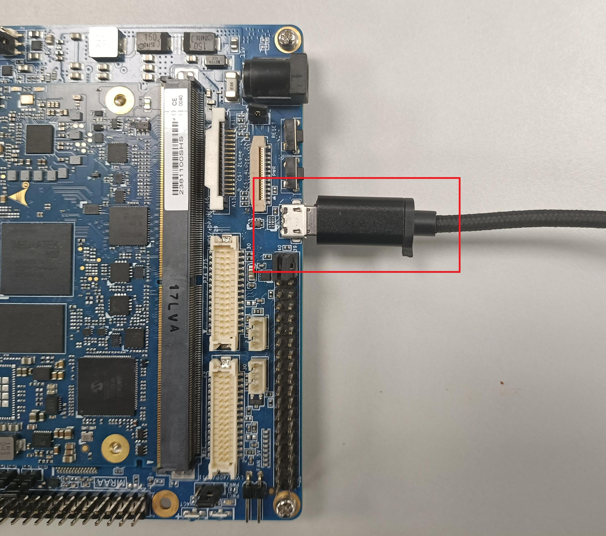

Flashing Ubuntu Image on LEC-MTK-I1200Prerequisites Ubuntu 20.04 host pc Download Ubuntu OS Image by clicking here Setup the Linux Host EnvironmentFollow the below steps: $ mkdir Ubuntu-image$ cp adlink-lec-1200-ubuntu-jellyfish.zip Ubuntu-image$ cd Ubuntu-image$ unzip adlink-lec-1200-ubuntu-jellyfish.zip The resulting image directory should contain these files: $ lsbl2.imgbootassets.vfatcapsule.vfatfip.binfirmware.vfatlk.binu-boot-env.binu-boot-initial-envubuntu.imgubuntu.jsonImage.tarlec_mtk_i1200_ufs-updates.ziplec-mtk-ubuntu-setup.sh Follow below steps to install tools and configure your host PC to flash the Ubuntu image: $ sudo apt install -y picocom Install genio-tool and its dependencies. This is used to flash Ubuntu images to the LEC-MTKI1200. # pip3 >= 20.3 is required for genio-tools, but the latest version in focal-update is 20.0.2# Upgrade pip by pip command and remove pip deb packagespip3 install --upgrade pip$ sudo apt-get remove python3-pip python-pip-whl$ sudo apt update# Install fastboot$ sudo apt install fastboot# Install the latest genio-tools$ pip3 install -U genio-tools Add a new udev rule and add your user account to the plugdev group: echo 'SUBSYSTEM=="usb", ATTR{idVendor}=="0e8d", ATTR{idProduct}=="201c", MODE="0660", $ GROUP="plugdev"' | sudo tee -a etc/udev/rules.d/96-genio-board.rules$ sudo udevadm control --reload-rules$ sudo udevadm trigger$ sudo usermod -a -G plugdev $USER command usermod requires you to logout and login again with your account to make it effective. You only have to do this once, depending on your Ubuntu version you may also need to run below command: $ sudo usermod -a -G dialout $USER Connect a micro USB cable to the LEC-MTK-I1200 as shown below:  Flash the ubuntu image to LEC-MTK-I1200Flash the Ubuntu Images using genio-flash tool. $ genio-flash Once image booted, run the below command to replace Kernel and install .deb file Login to the system, Username: ubuntu Password: ubuntu Copy Image.tar , lec_mtk_i1200_ufs-updates.zip and lec-mtk-ubuntu-setup.sh from Ubuntu-image directory to a USB stick. $ cp /Ubuntu-image/Image.tar ${USB_DRIVE}$ cp /Ubuntu-image/lec_mtk_i1200_ufs-updates.zip ${USB_DRIVE}$ cp /Ubuntu-image/lec-mtk-ubuntu-setup.sh ${USB_DRIVE} Connect the USB Drive into LEC-MTK-I1200. $ mkdir /home/Images$ cp {USB_DRIVE}/Image.tar /home/Images$ cp {USB_DRIVE}/lec_mtk_i1200_ufs-updates.zip /home/Images$ cp {USB_DRIVE}/lec-mtk-ubuntu-setup.sh /home/Images$ cd /home/Images$ sudo chmod +x lec-mtk-ubuntu-setup.sh$ ./lec-mtk-ubuntu-setup.sh After a successful reboot ,the Ubuntu image will be booted on the LEC-MTK-I1200.